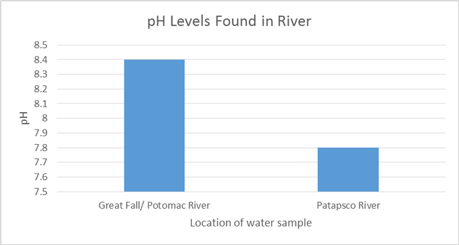
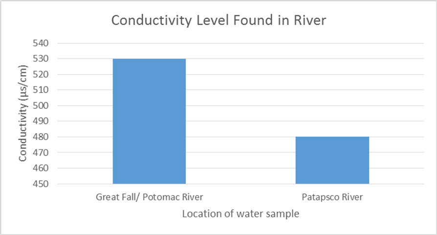
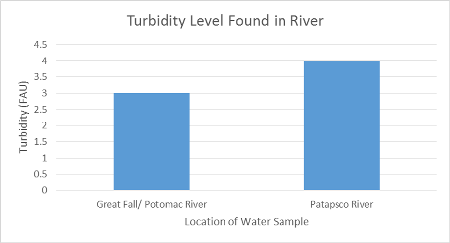
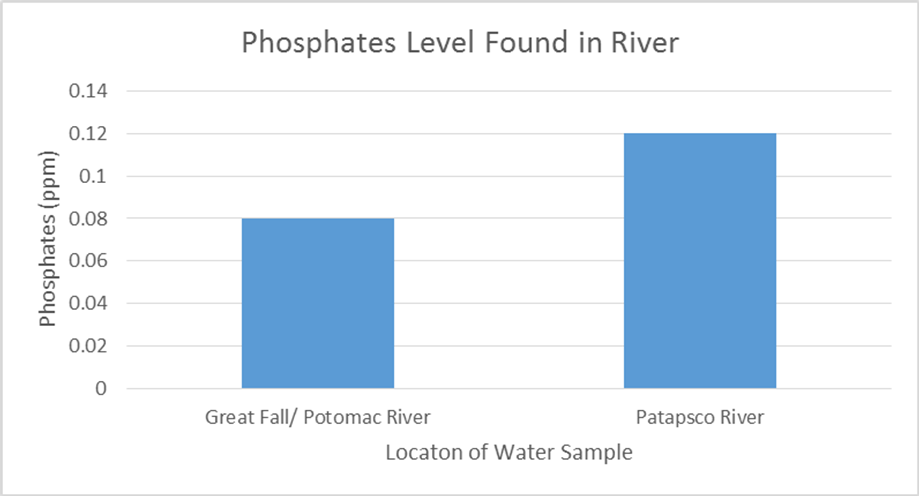

Introduction
Essentially these two rivers are prime representative and defining factors for Maryland. The Potomac River encompases the sothern Maryland and the Patapsco River encompasses the northern part of Maryland. By knowing this, its begs to question: Which part of Maryland is more safe for living organisms and which part is supseptable to pollution and contamination?
For our group project, we gathered water samples from two different areas in Maryland. The two locations we sampled were the Patapsco River and the Potomac River near the Great Falls area. Our research question is, “Do different degrees of urbanization affect water quality in an area?” Our hypothesis is that the location of the water affects the water quality. We predict that pH will be higher, the turbidity will be lower, conductivity will be higher, and the phosphorous content will be lower in the Potomac River compared to the Patapsco River.
Methods
Observaions
The observations that we made while at the Patapsco River was that there was a few pieces of trash surrounding the water, there were a few snakes slithering the ground, and the ground was full of leaves fallen from the trees. What we observed at the Potomac River similar to the Patapsco River except that we didn’t see any snakes and there wasn’t as much trash surrounding the water.
Defining Variables
We controlled for error in collection by gathering the water at the same time during the same day (about 3pm on a Saturday) and kept the containers sealed until ready to test in a room without direct sunlight and at room temperature, so that it wouldn’t disturb the original quality of the water. Our independent variable is the location of the body of water, and our dependent variables are the pH, conductivity, phosphate, and turbidity levels of the water.
Materials/Directions Used
The materials used for this experiment were distilled water, sample water from the Patapsco River and the Potomac River, several empty blank beakers, transfer pipettes, test kits for pH/phosphate/turbidity/conductivity, a Smart Colorimeter, and a Vernier LabQuest 2 and Conductivity Probe. We followed the procedures for the colorimeter and LabQuest from the Smart Colorimeter instruction sheet (LaMotte, 2012) for the pH, phosphate, turbidity, and conductivity tests for each sample of water from the study sites. We recorded the information from the tests for Patapsco River and Potomac River then created our graphs in Microsoft Excel using the data from the each test.
Results
Table

Graphs
   Graph Analysis
Each graph shows the different tests conducted on the water samples. In order from top left to bottom right, respectively, are the conductivity, pH, phosphate, and turbidity comparisons from each body of water. Some visible trends shown are that the Potomac River has a higher pH, making it a bit more basic than the Patapsco River and the conductivity of the Potomac River is higher than the Patapsco River, meaning it conducts electricity at a higher rate. The differences between the samples are the turbidity and phosphate levels, which are much higher in the Patapsco River compared to the Potomac River.
Conclution
Discussion
The results of our experiment show that Potomac River has a higher pH and conductivity level, and a lower turbidity and phosphorous content level when compared to the Patapsco River. The pH is higher because the Patapsco River does not contain as much alkaline levels compared to the Potomac River. The 8.4 pH of the Potomac river does not fall within normal range for pH, which is 6.5 to 8, but the 7.8 Patapsco River does just make it within the normal range. This hints towards the water straight from the Potomac River as being dangerous for consumption. The conductivity level of the Potomac River is higher compared to the Patapsco River because it contained a higher level of salt concentration in that area, which in turn makes it easier to conduct electricity. However, both water samples fall between the normal range of conductivity, which is between 50 and 1500 µS/cm. The turbidity level in the Potomac River is lower than the Patapsco River because it is has more clarity and does not contain as many particles floating around that cause the turbidity to increase. This shows that the Patapsco River contains more particles such as algae, plankton, or other microscopic organisms that cause the light that is shined through the water to scatter and create fogginess and turbidity. The phosphorous content of the Potomac River is lower than the Patapsco River because there is not as many nutrients from places such as sewage, fertilizer, road salts, or animal waste that is used in the area that gets drained into the water. Phosphate is only a risk to human health when consumed in high concentrations, and the water from the Potomac River falls within the normal range for phosphate levels. In gathering these results, we accept our hypothesis that the location of the water does have an effect on the water quality.
Error Analysis
We may have collected the water samples right after a heavy rainfall, which will skew the results a bit and not show the normal levels of the rivers. Also, if the bottles were not closed tightly enough, the samples may have been contaminated or water may have leaked out of the bottle, causing us to lose some of our samples.
Future Experiments
A new experiment that would help expand upon this lab would be to compare the difference of water quality levels of two different locations right after a heavy rainfall and a few days after the rainfall. This will show how direct rainfall causes the water quality of a river to change, benefit, and/or harm the surrounding environment and will further support the results obtained in this lab.